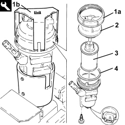

1044B20 FUEL FILTER FILTERING ELEMENT - REPLACE
- Path
- Procedures > 10 ENGINE > 1044 FUEL CIRCUIT PUMP/S AND DEVICES > 1044B FUEL FILTERS > 1044B20 FUEL FILTER FILTERING ELEMENT - REPLACE
- Kind
- repair procedure (removal / refitting; the operation number is the code)
- Applies to
- engines: 1.9 JTD 8v, 1.9 JTD 16v; all production periods
- Interactive page
- https://sloeber94.github.io/elrnDB-fCrm/en/#/194000300
Applies to: engines: 1.9 JTD 8v, 1.9 JTD 16v; all production periods
 Removing
Removing
 Refitting
Refitting- Make sure that the ignition key is in the OFF position, then disconnect the battery terminal (-).
Description | Connector | |
|---|---|---|
- | Battery |
Op. 1016A10 SOUND-PROOFING COVER - R.R
Op. 1044B10 FUEL FILTER ASSEMBLY - R + R OR REPLACE
1. Working at the bench, undo the ring nut (1a) fixing the fuel filter cover using the tool (1b).
Tool | Description | Function | Validity |
|---|---|---|---|
1871000100 | Spanner and support | Loosen/tighten fuel filter cover ring nut | 1.9 JTD 8V 1.9 JTD 16V |
2. Remove the fuel filter cover.
2. Remove the fuel filter cover.
4. Remove the gasket.

Applies to: engines: 1.9 JTD 8v, 1.9 JTD 16v; all production periods
Refitting
Removing- Place the gasket back in its housing.
- Position a new fuel filter filter element in its housing.
- Place the fuel filter cover back in its housing.
- Tighten the ring nut fixing the fuel filter cover to the recommended torque using the tool.
Tool | Description | Function | Validity |
|---|---|---|---|
1871000100 | Spanner and support | Loosen/tighten fuel filter cover ring nut | 1.9 JTD 8V 1.9 JTD 16V |
Component | Fastening | dia | Value (daNm) | Validity |
|---|---|---|---|---|
Ring nut fixing fuel filter cover | - | - | 3.0 | 1.9 JTD 8v 1.9 JTD 16v |
Op. 1044B10 FUEL FILTER ASSEMBLY - R + R OR REPLACE
Op. 1016A10 SOUND-PROOFING COVER - R.R
- Connect the negative battery terminal.
Topics linked from this page (3)
Topics that link to this page (13)
- B013 ENGINE STARTS WITH DIFFICULTY
- D005 ENGINE DOES NOT PRODUCE BEST PERFORMANCE
- D010 ENGINE IDLE IRREGULAR
- D012 ENGINE IDLING TOO LOW
- D014 ENGINE GOING OFF ON IDLING (THEN RESTARTING)
- D020 ENGINE CUTS OUT WHILST RUNNING (THEN NOT RESTARTING)
- D021 ENGINE CUTS OUT WHILST RUNNING (THEN RESTARTS)
- Y002 P0087 - PRESSURE ON FLUTE
- Y003 P0088 - PRESSURE ON FLUTE
- Y104 P0237 - TURBO PRESSURE
- Y105 P0238 - TURBO PRESSURE
- 1040OA FUEL SUPPLY CIRCUIT CHECK
- 1060G30 WATER PRESENCE SENSOR IN FUEL FILTER - R.R.